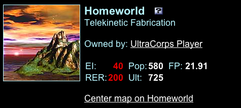

Walkthrough (Detailed Intro)
Welcome to the UltraCorps universe, where conquest is job one!
This "walkthrough" assumes that you are actually looking at the game. (The easiest way to do that is to play a solo game, which will let you try everything except the inter-player communication features.) It will take you through the basic screens and procedures that you will use to conquer the galaxy. If you don't have a solo game running, you may want to open another window, go to the Lobby page, and start one.
To start with, arrange this window and the game window on your screen so you can easily switch between them. (When you follow a help or information link, it will take over this window. When you're through looking at the help, use the BACK button on the help window to return to the walkthrough. On help screens, the gold arrow in the top left corner will also take you back to the previous page.)
Now, in the game window, display your Player News page by clicking the Com-Net button in the top bar.
For a PDF version of this walkthrough, which you can print out and use for reference, click here.
The Goal of the Game
Let's start with some UltraCorps fundamentals.
- In a solo game, you are the only player, and there are 12 worlds besides your homeworld. You win when you conquer them all. It's a painless way to practice, and when you take over the cluster fast enough, you'll earn a badge.
- A PUB game (Private Universe Battle) has one to five other players. As a subscriber, you can create a PUB game yourself and invite whoever you want. Elite subscribers can run PUBs for up to 12 players.
- And then there are bigger games . . . rings for dozens of players, and megas for hundreds . . . where everyone is trying to conquer as many worlds as possible.
Turn-Based Play
UltraCorps is not a "real-time" game. It runs in turns. In most games, each turn lasts a day. (Some games run at other speeds, and if you play a solo game, you control when each turn ends.)
Every turn, you and other players can view your empire, communicate with other players, and issue fleet and production orders. You can do this whenever is convenient to you, until the turn ends.
At the end of the turn, the game becomes inaccessible . . . you can no longer view your empire or issue orders. This scheduled down-time, the tick, is when the computer processes the orders received during the turn. For more information, see The Turn and the Tick.
The Big Picture
You start with a single world, your homeworld - the one you named when you started the game. There can be thousands of other worlds. Some are owned by other players, but when the game starts, most are unowned. Your homeworld will have a single fleet, the "base fleet." The contents of that fleet depend on the race you chose, but usually include:
- Ultranium: the game's currency. Each world has its own Ultranium supply. You can ship Ultranium between worlds, but it can only be spent when it is in a base fleet, and only to buy units or licenses for that world.
- Population: the workers who build new units for you. Like Ultranium, they can be moved around, but they can only work when they are in a base fleet.
- Scanners: The long-range sensors which scan for incoming and outgoing fleets, letting you know if visitors are on the way. An example is the Scan-O-Matic 80. Scanners are non-combat units and cannot be destroyed – if you capture a world with a scanner, you also capture the scanner.
- Transport units: Various spacecraft (with and without weapons) that can carry other units between worlds. An example is the Thirus All-Purpose Saucer.
- Self-propelled units: Units that travel through space but can't carry anything else. An example is the MegaBot.
- Ground units: Units without space travel capability. If you want to move them between worlds, you'll have to put them in a transport unit. An example is the HEW-9 Eliminator.
You will create new fleets, assign units to them, and deploy them to attack nearby worlds. Once they arrive, they'll fight any other forces there, until only one side survives. If that force is yours, you win the planet and everything left on it: Ultranium, population, scanners, and so on. Use those resources to enlarge your forces and continue your conquests.
This Walkthrough
In this walkthrough, you'll learn the fundamentals of UltraCorps . . . how to:
- Explore the Universe
- Assemble a Combat Fleet
- Deploy a Fleet
- Build New Units
- Contact Your Neighbors
- Visit the Forums
- Customize Game Preferences
- Keep Current
- End Your Turn
- The Next Turn!
To access topics in this walkthrough, you can click the titles above, or scroll down to read them in order.
Step 1: Explore the Universe
Player News
You should be at your Player News page, which has your player name followed by the word "News" (screenshot above). This is your communications center, where you can use UltraMail (the in-game email). We'll cover those areas later.
On the right side of the page you'll see the name of your homeworld under the "Worlds" heading. Click your homeworld's name to access its World Information page.
World Information
You'll soon be familiar with the World Information pages, which are displayed when you click on world names or on their images on the Star Map. This is where you'll pick worlds to attack, assemble and deploy fleets, and place production orders. Let's look around.
World Image
You will see the world image and planet type. These are (currently) just for flavor. Only two stats matter about each world. They are . . .
EI and RER
Note your planet's Environmental Index (EI) and Resource Extraction Rate (RER) near the top of the page. These values tell you how productive the planet is. EI stands for Environmental Index: it is how many population (Pop) the world adds each turn. RER stands for Resource Extraction Rate: it is how much Ultranium (Ult) the world produces each turn. Population and resources spawn automatically during the tick. Higher values are better, because having more population and Ultranium means you can produce more units faster!
These values are (almost) constant. Nothing in the game can increase or decrease a world's EI or RER, except the special powers of certain races, and this happens automatically if those races control a world.
The Base Fleet
Remember when you chose your race? It had a particular configuration of starting fleet units. All those units now appear under the heading "Base Fleet:"
You should have population and Ultranium, maybe a scanner or two, and other units. If you want to know more about a unit, click its name to bring up a popup information window. You'll see a picture of the unit, its game stats (combat strength, speed, carrying ability, and current cost), and a description of its strengths and weaknesses. You can also download a desktop picture of the unit.
The Star Map

The Star Map, located in the left frame, shows your homeworld in relation to the nearby worlds. Your homeworld is the only white world and should be in the center. All the yellow worlds should be considered targets.
If there are other players in the game, you can zoom out to see some red worlds. These belong to your rivals . . . at the beginning of the game, every red world you see is a rival homeworld. They may be friendly or hostile . . . you'll have to find out!
Key
| Your world. You start with a single planet. You want more. Lots more. | |
| Neutral world. Yellow "Nobody" worlds are unowned. Targets! | |
 |
Another player's world. They all start as red, but you can change each player's color on his Empire page, to make it easier to distinguish your neighbors. |
 |
Unformed world. If the game is still open for joining, some of these will turn into actual worlds. Once the game has closed, any unformed worlds will remain unformed. |
To Use the Star Map:
- Mouse over any world, whether you own it or not, to see its basic stats in the Quick Scan panel below the map.
- Click a world you do not own (any color but white) to display its World Information page. You will be able to see the units there, and later in the game you'll be able to see the world's battle history. You won't be able to see fleet organizations or production orders on the worlds you don't own.
- Look around the galaxy. Use the directional arrows in the border around the map to pan up, down, left, right, or diagonally.
- Use the zoom buttons to get a close-up view of several worlds, a big-picture view of the area, or anything in between.
- Between the Zoom In and Zoom Out buttons is Home. Click on this at any time to center the view on your homeworld.
- As you're checking out the nearby worlds, look for those that might make good targets for an early attack. Here's what to watch for:
- Is the world already owned? Scan for nobody worlds (the yellow ones). They defend themselves if attacked, but do not launch attacks on other worlds.
- Is the target fairly close to your homeworld? "Close" is relative . . . the faster your initial fleets can move, the more worlds you can consider "close." But anything within 50 units is a single hop for even the slowest fleet.
- What is the world's Firepower (FP)? You can see this number on the rollover. A low Firepower indicates a good potential target; if you send a fleet with double the worlds's FP, it's very likely to win. When you click on the world you can see the actual forces there. Fewer combat units are always better. Notice how units are numbered - if there are more than eight units of the same type, there will be only one icon and a number.
- Look for an ample supply of Ultranium and population. Early in the game these numbers will be low. But neutral worlds add Ultranium and population every turn . . . so every turn they become richer prizes. (In some games, they will eventually start building, using up their resources and becoming tougher.)
- High Environmental Index (EI) and Resource Extraction Rate (RER) values are also good.
- Look at the worlds near you and pick a target. Make a note of its name.
- Click the Homeworld button in the top bar to frame your homeworld in the Star Map viewer. Then click your homeworld to show its World Information page. (From any Player Information page, you can use the Show Empire on Star Map link to see a view centered on that player's homeworld.
Whenever you need help on using the Star Map (or any other feature) click the nearby button to display the appropriate Help page.
Step 2: Assemble a Combat Fleet
To send units between worlds, you must assemble them into fleets. Let's create an attack fleet loaded with all the firepower you've got. Newbie Mistake Number One is to send a wimpy conquest fleet. Don't be sportsmanlike when you attack a neutral planet. Pick a soft target and send the biggest fleet you can.
When the game begins, you have one fleet: your homeworld's Base Fleet. This represents all the units that are on the ground or in defensive orbit. To send units to another world, you'll need to split some units off by creating a new fleet.
Your first attack fleet should include all, or almost all, of your combat forces to ensure victory. "But shouldn't I leave some defenses at home?", you ask. Well, in a solo game, nobody will attack you! If you have opponents . . . yes, you will need defenses. Some units, like Sentinels of Garsasso and HEW-9 Eliminators, are much better on the defense than on the attack; read their descriptions and X-Factors to see why. If you're going to leave something at home, these are a good choice.
At the beginning of the game, there is little or no danger of a strong attack on your homeworld. But a completely undefended world will fall to ANY attack, and some players start the game with some weak but very fast units. They might send one at your homeworld, just to see if you're careless enough to leave it completely undefended.
But remember that you can build new units (see Production, below). If you order some units that can be finished in a single turn, they'll appear when the turn ends and the game ticks. Production takes place before combat . . . so you can send off everything you start with, and your new units will appear in time to defend your homeworld.
To Create a New Fleet:
- On your World Information page, go to the Fleets section and click the Make New Fleet button.
- You will see a chart with all the units you have at the world. You can click the arrows to move single units to and from the Base Fleet, or use the |< and >| arrows to move ALL the units of that type (or all that will fit on the fleet's transport units). You can also put the cursor on a number and change it. Note that you can have any number of fleets on a world, but you can only move units to and from the Base Fleet. If you want to move a Giganto Planet Attacker from Fleet Alpha to Fleet Omega, you'll have to move it from Alpha to the Base Fleet, and then from the Base Fleet to Omega.
- Keep these factors in mind when assembling your attack fleet:
- Getting Info: For more information on any unit, click its name to display a popup with detailed unit data, like this.
- Excess Baggage: In most cases, especially at the beginning of your career, you do not need to send population, Ultranium, scanners, or Cargo Boosters in a conquest fleet. If you started without any transport units, or if your transports are too slow to suit you, you can buy a license for ships that can carry your ground combat units. For more information on buying design licenses, see Build New Units. (One exception: If you can quickly capture a world with a license for the Thirus All-Purpose Saucer, you can add this useful Speed-100 unit to your own forces. But any world that can build the Thirus will be defended by some of them, and a force with more than three or four Thirus is probably too tough for your first conquest.)
- Watch the Carrying Capacity (CA): As you move units back and forth, watch the total carrying capacity, shown in the Carry field. If the number is negative, the fleet will not take off - it's too heavy.
- Pay attention to Speed (SP): The units you choose determine the fleet's overall speed. Fleets only travel as fast as their slowest unit. For example, a fleet with both TK Bikes (Speed 200) and Cargo Boosters (Speed 50), will only travel at 50.
- Unit Statistics: Examine the Offense (OF), Defense (DF), Population Damage (PD), and Attack (AT) ratings of your units. Compare them to the values of the units defending your target world. It is always better to send an overwhelming force . . . For the complete review of unit stats and their meanings, see Unit Statistics.
- When your fleet is configured, enter a name in the Name field (have fun naming your fleets!) or leave it blank to get a random fleet name. Then click Assemble Fleet. Or you can click Cancel Assembly to exit without assembling the fleet.
Note: For more information on fleet assembly, click the
button above the fleet chart to display the Fleets Help page.
Two special types of fleets you can create are Gift Fleets (to give units to another player) and Auto Fleets (that carry resources automatically). For more on these, see the Specialized Fleets page . . . but don't make a special fleet right now.
- Back at your World Information page, a message indicates that your fleet is assembled and ready to launch, which you will do in Step 3. If at any time you want to modify the fleet, click
(located to the right) and transfer units in or out. Click
to disband the fleet and return its units to the Base Fleet.
Step 3: Deploy a Fleet
Now that your fleet is assembled, you're ready to deploy it to a target world. Remember the world you picked back when you were exploring the universe? The nearby, weakly defended planet that will be your first conquest? This is the one you'll deploy your fleet to now.
To Deploy Your Combat Fleet
- Back at the World Information page, click the
button next to the name of the fleet you just assembled.
- The fleet name will appear on the Star Map. Above the Star Map, you will see a panel with the fleet's name, speed, and Firepower. If this isn't the fleet you wanted to deploy, click the red Cancel. Otherwise, look for your target world on the Star Map. You can zoom in or out, or move the map view, without interfering with your deployment, and you can still mouse over worlds to get the "quick scan" information. On the main Star Map, you'll see two numbers by each world, separated by a slash. The first is the distance to the world in grid units. The other is how many ticks it will take your selected fleet to get there. For instance, if you see 40/1, that means the world is 40 units away, and your fleet can get there in a single tick. The faster your fleet, of course, the more worlds it can reach quickly.
- Click on the world you want to attack. Beside the fleet's name on the World Information page, you'll now see that it is deployed to the target world. That's it! Your fleet will take off for its destination during the next tick. Good luck!
- What if you want to change the fleet's target? You can re-deploy it at any time before the tick. After the tick, it will be in space, and you can't change its destination.
When the tick runs, the fleet will move toward the destination world at its maximum speed. When it arrives, a battle will be fought. Its outcome determines who owns the world. You'll learn what happened when you log on for the next turn!
Step 4: Build New Units
Now that your fleet is deployed, it's time to build more units for future attacks.
To Place Production Orders:
- To begin producing units, scroll down to the Production section on your World Information page. Every world can produce units, and every world needs separate orders . . . but to start with, you have only one world.
- Click New Order to display the Production screen.
This screen shows a list of the units this world can build now. (To increase the variety of units you can build, buy new licenses - see below.) Before you place a order, here are a few tips:
- Quantity counts. Build hordes of cheap units now and get the heavyweights later. You'll always need small units for cannon fodder, anyway.
- Looking for long-lasting units? Choose units with higher Defense (DF) values, which are likely to survive more rounds of combat.
- Looking for offensive punch? Look for units with higher Offense (OF) and Attack (AT) values, for a relatively small amount of Ultranium.
- Trying to compare overall combat effectiveness? Look at the unit's Firepower (FP), which is computed from OF, AT, and DF. See Firepower for more information.
- Do you care about wiping out the population? Look at the Population Damage (PD) values. Early in the game, you want to capture the population for yourself, so high PD numbers are usually a drawback. There may be times when you want to raid a foe's territory and wipe out his people, but in general, high-PD units are clumsy, destructive, and cheaper, while low-PD units are precise and more costly. On the other hand, PD never affects your own units, so high-PD units are perfectly good defenders. On the third hand, this game is not won by concentrating on defense.
- Do you want self-propelled, ground, or transport units? If you want units that are self-propelled (that don't have to be carried), look for a Carrying Capacity (CA) of zero. If you want them to transport other cargo, find ones with values above zero. Ground units have negative CA ratings . . . they have to be carried.
- How fast do you want to move? Check the unit's Speed (SP) and keep your next targets in mind. Are there a lot of relatively close worlds? If so, you don't need the fastest units right away. But to span great distances quickly, look for something with a speed of at least 120. Note that a speed rating of N/A means the unit can't move on its own. It needs to be carried.
- How much does a single unit cost? The Cost (CST) of a unit is listed to the far right. Consider how much Ultranium you own, and how quickly you want to produce units. If the economic rules are in use in your game, costs change every turn. Experienced players can anticipate changes and use them. To start off with, though, just be aware that costs will change if the economy is in play, and plan on checking them regularly.
- How many people are needed to build a unit? Complex units have high (CPX) ratings (the amount of population it takes to build one). For instance, if you have a population of 100, you can build four CPX 25 units in one turn. You could also build a single CPX 200 unit in two turns. The CPX rating of units never changes, but certain races get a CPX break on certain units.
- Click the button next to the unit you want to produce and enter an amount in the Quantity field. The amount may not exceed the number in the Max column. If you want to build more units than the Max, you'll need to break them up into multiple orders. (This limitation probably seems pointless to you. It's part of the way the game's economic system works. Trust us on this for now; all will become clear.)
- Click Add Order to place the order. After your order is placed, you'll return to the Production screen, where you can place another order (you may place as many as you want). Your people will keep working until they run out of money or until they have built units whose CPX is equal to their Population total. At that point, work stops, but unfinished orders remain in the queue. You can change them next turn, or just let your people keep on following their orders.
- When you're finished giving production orders, click Finished to return to the World Information page.
To Buy New Licenses:
You're not limited to building the units you start with. You may buy a new design license on any world. This creates a factory that permanently gives you the ability to build the new unit there. Click Buy License to see the available licenses, organized by unit type.
Each license you see will have either a checkbox or OWN. If it has OWN, that world has that license already. If you click on a checkbox and then go down and click Buy Licenses, you have placed an order for that license. It appears in your production queue. It will require Ultranium, but no Population, to build. Important note: You can order a unit on the same turn you buy its license, but the license has to be finished first. If the license isn't fully paid for, the factory isn't complete and will build no units!
If you don't want a license, click Finished at the top or bottom of the page to return to the Production page.
For More Help on Production:
Click theStep 5: Contact Your Neighbors
This does not apply to a solo game, so you may want to skip it for now . . . but come back to it before you start your first game against a live opponent. It won't be long before you find yourself entangled with other empires. Plan for this and decide who your allies and foes should be!Do you have close neighbors? Maybe you should see if they're interested in a non-aggression pact, or "NAP." Of course, you don't want to ally with ALL your neighbors. That doesn't leave you any room to expand! But it's bad to be completely surrounded by foes. See Agreements and Alliances for more information.
Once you decide which diplomatic tactics to use, start contacting other players. Your primary mode of communication is the UltraMail system.
To Send UltraMail:
- On the Star Map, click a world owned by another player to display its World Information page.
- On that page, click on his player name (right below the world name) to see his Empire page, which gives basic information about his empire.
- Click the Send UltraMail link on the Empire page to automatically open a separate UltraMail window.
- Enter a topic in the Subject field and then compose your message by typing in the text entry area. Stay in character and have fun!
- When you're finished, click Send Message; then click Exit to close the UltraMail window. Since UltraMail is real-time, players are notified instantly on their Player News page under "may UltraMail" when they receive new mail. If you're conducting a lot of diplomacy, you will want to check several times a day! If course, you can also use regular e-mail, phone, or whatever, but UltraMail lets you maintain your own privacy if you wish.
You can also send UltraMail by clicking the UltraMail tab in Com-Net. Just fill in the form (alias, subject, message) as usual.
For more information, click the button in the UltraMail window to display the UltraMail Help page.
Step 6: Visit the Forums
From the lobby, the Forums link will take you to the UltraCorps open forums. As soon as you have completed a solo, you'll be able to post there.
From with any game except a solo, the Forums link will take you to the In-Game forums for that particular game. You can contribute to public conversations, post messages to all other players, ask questions, or look for allies.
Step 7: Customize Game Preferences
To Create Your Empire Description:
- Click the Empire tab on the left side of Com-Net to see your Empire page.
- Your empire description is at the top of the page, under your player name. Initially, it will say "No description for your empire." To create a description, click on the [edit] link.
- Type a description (up to 255 characters) in the Empire Description field. Describe your empire or your persona . . . offer to negotiate . . . or just warn other warlords to stay out of your territory!
- When you're finished, click Save. The description will appear on your Empire page immediately.
- If you are a subscriber, you can also add an avatar to your Empire description.
Other Preferences:
don't exist yet, but when they do, we'll document them.
Step 8: Keep Current
A well-informed warlord is a successful warlord! Stay abreast of the latest galactic news and gossip by reading headline items (which will appearand participating in the forums. The forums will tell you what other players are doing. The headlines (which appear on your Player News page under Headlines) keep you up to date on official game events. Watch out for new units and upgrades, which are introduced throughout the game.
Congratulations! You have assembled and deployed an attack fleet, begun production, and . . . with a little luck . . . you will own another world after the tick. Your rise to interstellar fame is only beginning!
Step 9: End Your Turn
As your empire grows, you'll want check the All Fleets and All Production pages each turn when you think hyour orders are done, to make sure you haven't forgotten to deploy any fleets and that all your worlds have production orders.
For now, when you're done for this turn, just click the LOBBY button on the navigation bar. You can return at any time before the tick to modify your orders. Be sure you know what time your game ticks . . . it's shown below the Star Map.
That's it - see you after the tick!
Step 10: The Next Turn!
Welcome back! The tick has run, and it's time to take your next turn! Here are some of the things you should check:
- Look at the battle listings in ComNet. When you connect, you'll be on your Player News page. Probably the first thing you want to check is the Battle News in the right-hand column. There you'll see a listing of your force's battles on the last tick. Green arrows are good news; red arrows are bad news. "Captured From" and "Defended From" results are good news. "Captured By" means somebody took one of your worlds. "Defended By" means one of your conquering fleets has failed. (You won't have to punish the commander; a fleet which loses is wiped out.)
- Read the battle reports. Each battle in the listing has a Review Battle link. Click it to watch the battle, step by step. The first screen shows the starting forces. The buttons at the top will let you page through a turn at a time, until you get to the ending conditions, with only one side remaining. Looking at these battle reports can be very educational, especially if you won when you expected to lose, or vice versa. Sometimes you'll see where someone got lucky. Sometimes you'll see the effects of very high firepower or very good defense strength.
- Here is a sample of a battle report.
- Have you got mail? Check the left column of your Player News page to see if you've gotten any mail. Perhaps some of your neighbors are attempting diplomacy. Talk to them! You don't have to accept every deal that's offered, but neither do you want to be fighting everyone around you.
- Did you conquer a world? If so, you may want to send some Ultranium or population back to your homeworld. To do that, click on the world's name in the battle report. That will take you to its World Information page. See your conquering forces? If you want to ship some goodies home, create a new fleet with transport units, load the plunder onto it, and deploy it to your homeworld.
- Now look at the star map and pick a new target for your conquest fleet. If you see a good one, deploy it there! If the neighboring worlds look too tough, you may want to wait a turn or two and produce some reinforcements.
- Ah, yes, reinforcements. Scroll down and look at the Production section of this world's report. Here's where you will put your new citizens to work building new units. You can see what licenses the world has. If none of them suit you, you can buy new ones on this world. (Each world needs its own licenses. The factories on your homeworld can't build things on this new planet!)
- Speaking of your homeworld, you should go back and check it out. The units you ordered last turn should be ready, unless you put all your effort into building something so big it's not done yet. You can review and change your production orders, and even use the arrows by each order to move it up and change priorities. The X by an order will cancel it. (Watch out. If you cancel an order that has already started, all the work and money you've spent on unfinished units is gone. You can't stop work on an unfinished order, work on something else, and come back to the first one later.)
- As soon as you capture a world, you should check out the All Worlds page. Look at the bar at the top of your screen, and click the icon that looks like a globe. On the All Worlds page, you should see two entries: your homeworld and the newly captured world. This page is very important for managing your empire, and when you have a lot of worlds, it will be your friend.
Keep clicking around. Explore the game. Talk to your neighbors . . . and click on their worlds to see what they're doing, what forces they have, and how their battles have gone. Some will be your allies. Some will be your targets! And it's up to you to decide.
Have fun, and remember . . . Conquest is Job One!
More Help
Remember . . . this walkthrough is just a brief introduction to the game! Read the whole Help section and the descriptions of the various units for more details.